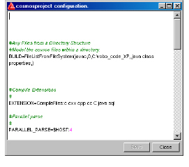

To edit a model’s configuration information in the graphical user interface
1 From the Navigator panel, select an information model.
2 Do one of the following:
• Select Model > Edit Model Configuration.
• Click .
Note: If you select any item besides a model in the Navigator panel, the Specify model name dialog box appears.
A configuration dialog box appears, displaying the model’s Setup.txt file.

Enabled variables (uncommented) appear black and disabled variables (commented) appear green.
3 Make changes as necessary.
For information on editing the Setup.txt file, see To create an information model by editing the configuration file in the create model wizard.
4 To save your changes, click Save.
5 To close the configuration dialog box, click Close.